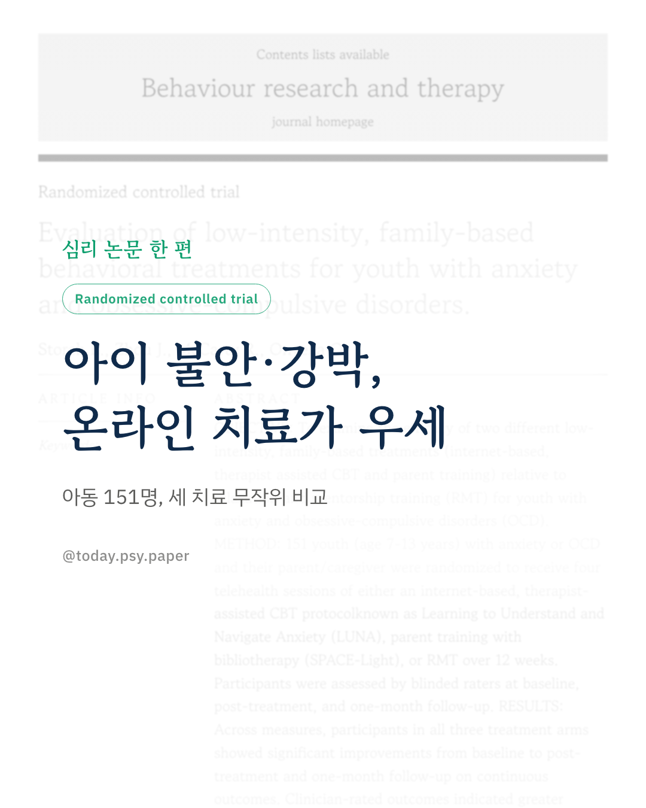
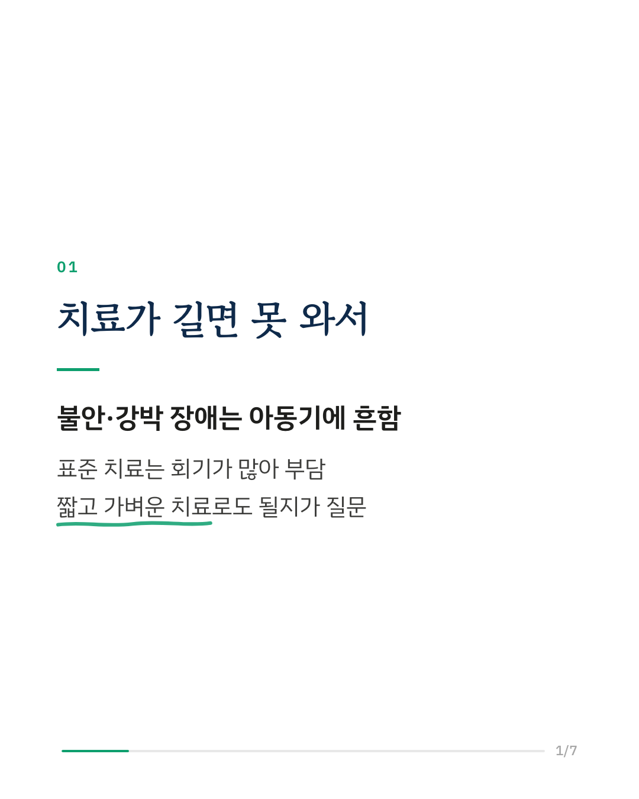
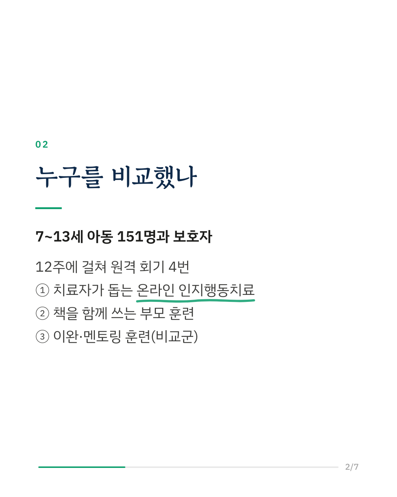
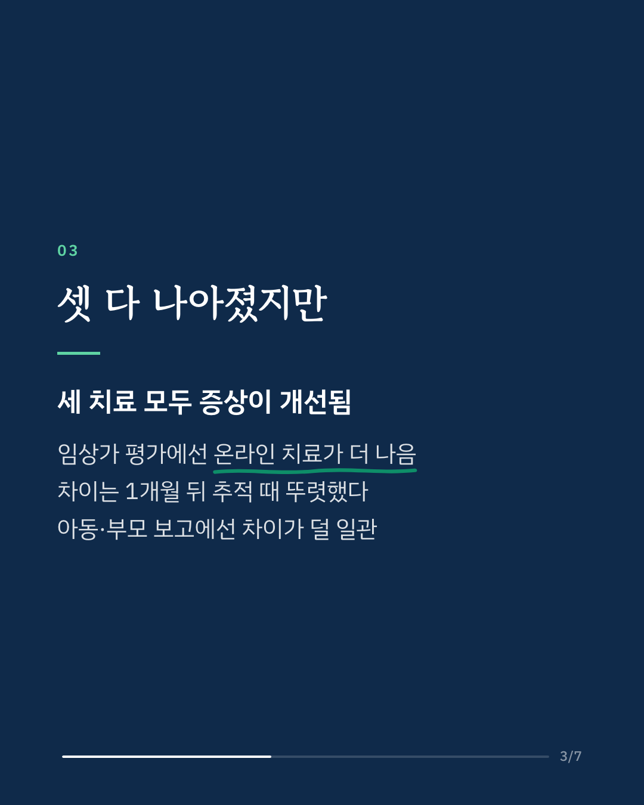
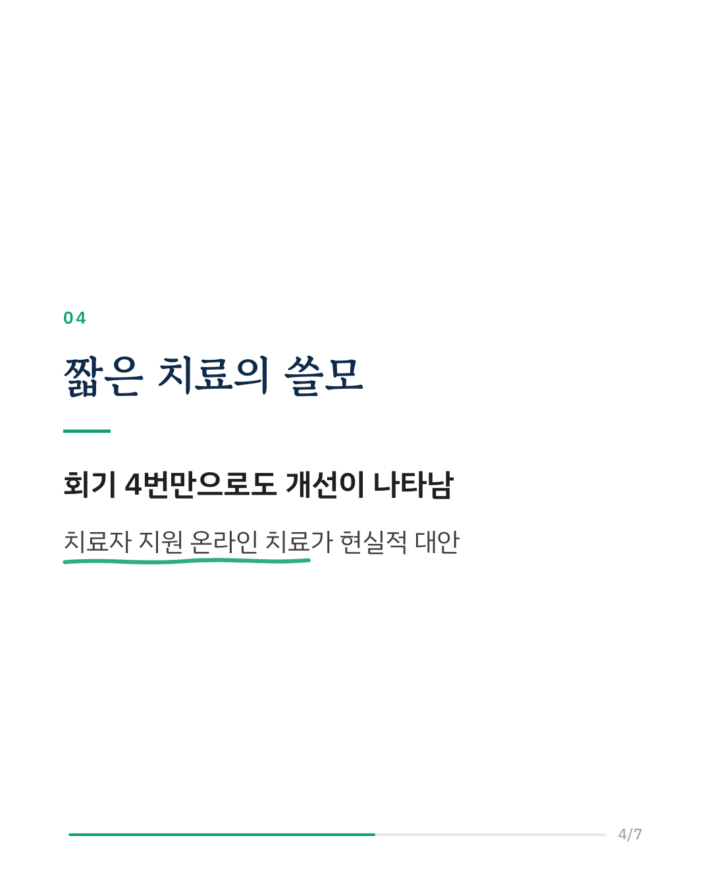
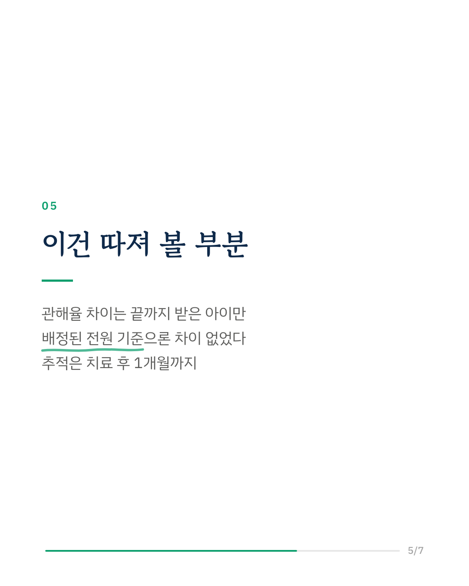
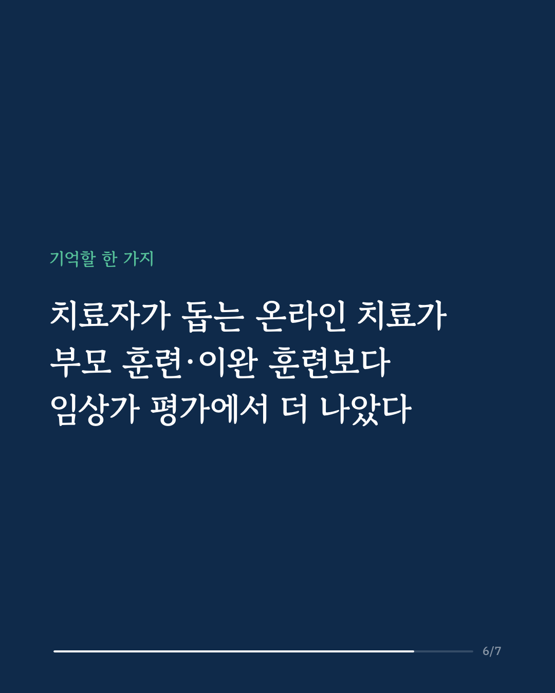
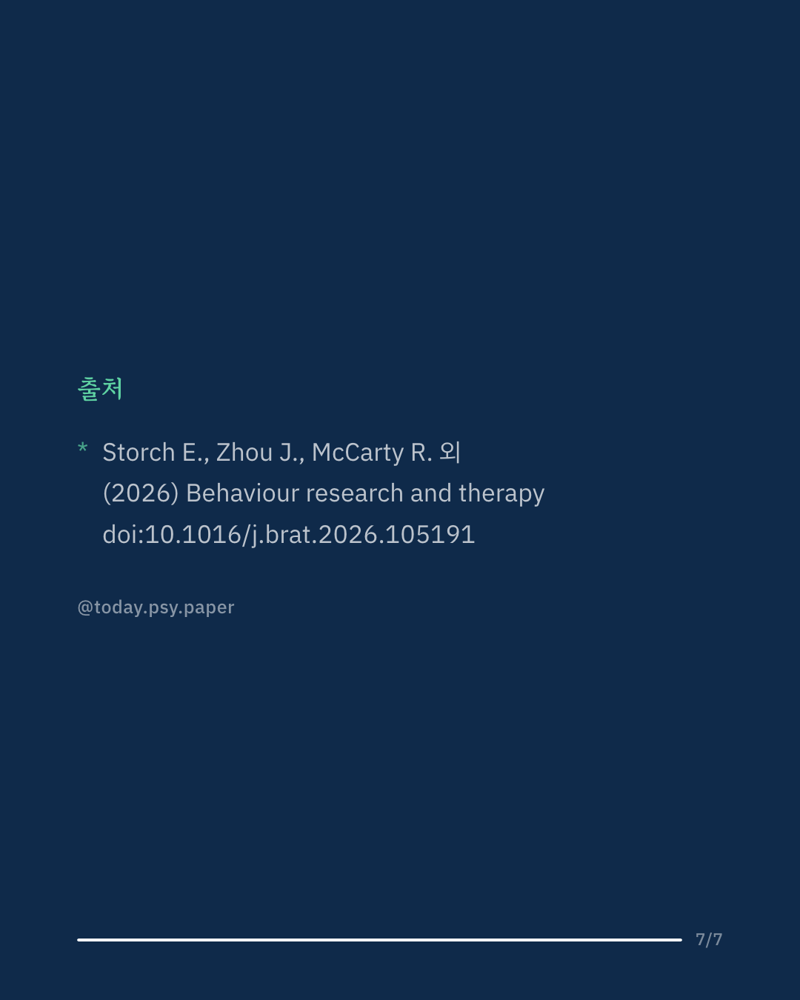

아동기 불안과 강박 장애는 흔하지만, 회기가 많은 표준 인지행동치료를 끝까지 받기는 쉽지 않습니다. 이 연구는 7~13세 아동 151명과 보호자를 대상으로, 12주에 걸쳐 원격 회기 4번만 하는 가벼운 치료 세 가지를 무작위로 비교했습니다. 치료자가 돕는 온라인 인지행동치료(LUNA), 책을 함께 쓰는 부모 훈련(SPACE-Light), 이완·멘토링 훈련입니다. 세 치료 모두 치료 직후와 1개월 뒤에 증상이 개선됐습니다. 배정을 모르는 임상가가 평가한 결과에서는 온라인 인지행동치료의 개선이 더 컸고, 특히 1개월 추적 때 차이가 뚜렷했습니다. 아동과 부모가 직접 보고한 점수에서는 차이가 덜 일관됐지만 역시 온라인 치료 쪽이 나았습니다. 중도 탈락률은 세 치료 간에 차이가 없었습니다. 짧은 원격 치료로도 아이의 불안·강박 증상이 나아질 수 있다는 결과입니다. 다만 치료 반응률과 관해율의 차이는 치료를 끝까지 받은 아이만 분석했을 때 나타났고, 배정된 아이 전원을 기준으로 하면 차이가 없었습니다. Behaviour Research and Therapy (2026), 'Evaluation of low-intensity, family-based behavioral treatments for youth with anxiety and obsessive-compulsive disorders' DOI: 10.1016/j.brat.2026.105191 #임상심리 #정신건강정보 #심리학연구 #논문리뷰 #소아불안 #강박장애 #인지행동치료 #아동심리
python3 publish.py 43013926